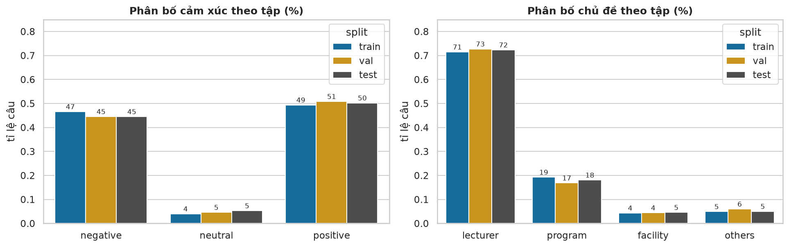
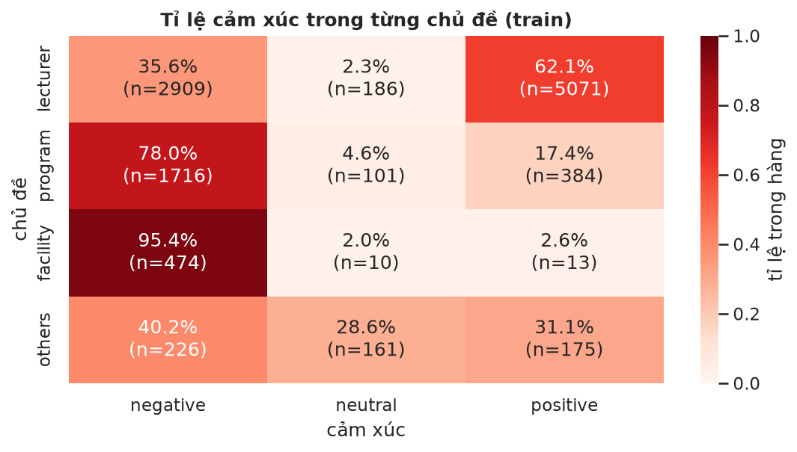
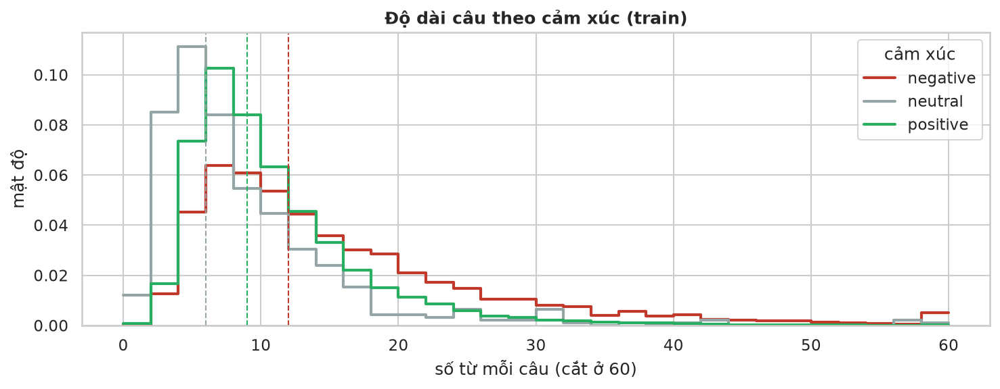
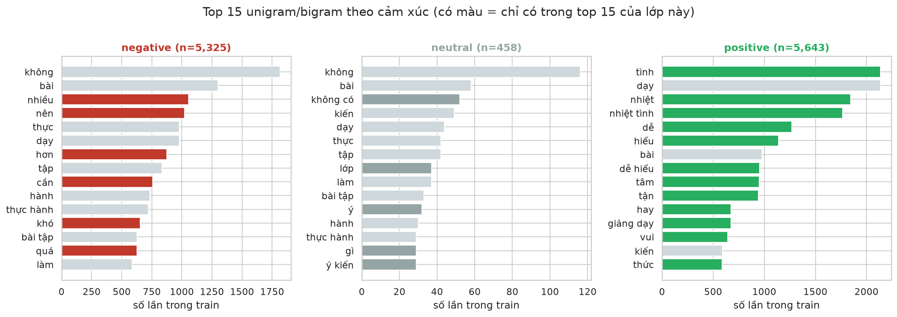
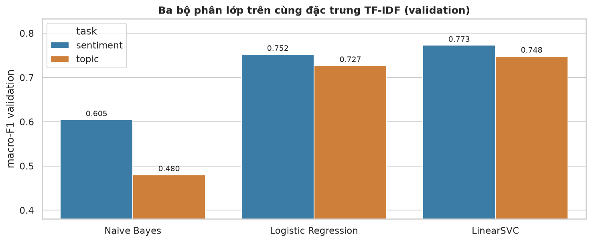
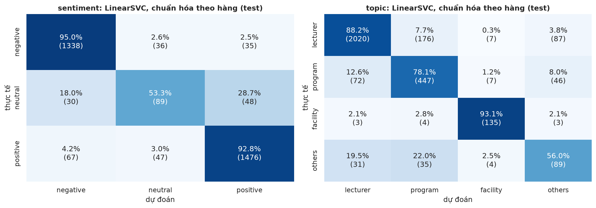
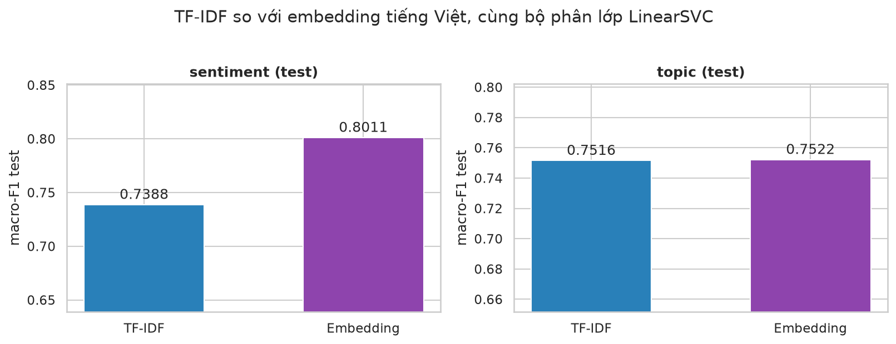
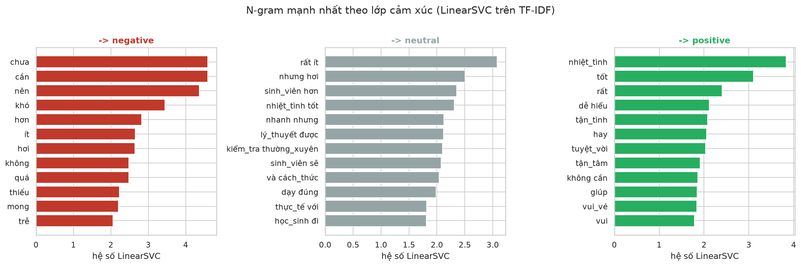
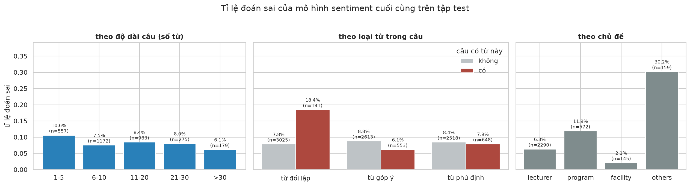

CO5177 | Nhóm G1 | Dữ liệu văn bản
Phân loại phản hồi của sinh viên theo cảm xúc và chủ đề
Nội dung
Nội dung trình bày
Bài toán và hướng tiếp cận
Trường hợp sử dụng, thước đo, quy trình chung, biểu diễn câu
Bộ dữ liệu
UIT-VSFC, quy tắc gán nhãn, cách chia
Kiểm tra chất lượng dữ liệu
Giá trị thiếu, câu trùng, token đặc biệt, viết tắt
Khám phá dữ liệu
Phân phối nhãn, cảm xúc theo chủ đề, độ dài câu, từ vựng
Tiền xử lý dữ liệu
Làm sạch, tách từ, mã hóa nhãn, TF-IDF
Xây dựng mô hình
Ba bộ phân lớp trên TF-IDF, embedding tiếng Việt
Đánh giá và phân tích lỗi
Kết quả trên test, so sánh với bài báo, từ quan trọng, lỗi
Kết luận
Kết quả chính, hạn chế, hướng mở rộng
01 | Bài toán và hướng tiếp cận
Bài toán: phân loại phản hồi của sinh viên
Sinh viên viết
phản hồi cuối kỳ
Câu phản hồi
"gv dạy ko hiểu gì cả, nói quá nhanh"
Mô hình
phân loại
văn bản
Kết quả
cảm xúc: negative
chủ đề: lecturer
Mỗi học kỳ trường nhận hàng nghìn ý kiến tự do; đọc và phân loại thủ công tốn nhiều thời gian. Mỗi câu được gán hai nhãn, mỗi nhãn một mô hình riêng:
sentiment(nhiệm vụ chính):negative,neutral,positivetopic(nhiệm vụ phụ):lecturer,program,facility,others
Accuracy
Tỉ lệ câu được gán đúng nhãn.
Macro-F1
Trung bình F1 của các lớp, mỗi lớp trọng số như nhau. Dùng để chọn mô hình.
Weighted-F1
F1 có trọng số theo số câu của lớp; dùng để so sánh với bài báo gốc.
01 | Bài toán và hướng tiếp cận
Hướng tiếp cận chung
Dữ liệu có nhãn
câu + sentiment + topic
train / val / test
Biểu diễn
câu thành vector: TF-IDF hoặc embedding
Huấn luyện
bộ phân lớp học trên train
Chọn mô hình
macro-F1 cao nhất trên val
Đánh giá
một lần trên test
- Bộ phân lớp: so sánh Naive Bayes, Logistic Regression và LinearSVC của scikit-learn trên cùng đặc trưng TF-IDF.
- Biểu diễn: giữ bộ phân lớp tốt nhất, thay TF-IDF bằng embedding câu tiếng Việt để xem cách biểu diễn có giúp ích không.
- Mất cân bằng nhãn: chọn mô hình theo macro-F1; Logistic Regression và LinearSVC dùng
class_weight="balanced". - Tập test chỉ được dùng sau khi đã chọn xong mô hình, để điểm số phản ánh đúng câu chưa từng thấy.
01 | Bài toán và hướng tiếp cận
Biểu diễn câu: TF-IDF và embedding
Bộ phân lớp chỉ làm việc với số, nên mỗi câu được biến thành một vector. Ví dụ với câu train "nhiệt tình giảng dạy , gần gũi với sinh viên ."
TF-IDF (unigram + bigram)
Sau khi tách từ: nhiệt_tình giảng_dạy gần_gũi với sinh_viên
Vector 13 025 chiều, chỉ 9 giá trị khác 0. Từ phổ biến (sinh_viên) có trọng số thấp, cụm hiếm hơn có trọng số cao.
Embedding câu tiếng Việt
Câu sau khi làm sạch (chưa tách từ) đi qua mô hình AITeamVN/Vietnamese_Embedding (fine-tune từ BGE-M3).
- Vector dày 1 024 chiều; mỗi chiều không ứng với một từ cụ thể.
- Hai câu cùng nghĩa có vector gần nhau, kể cả khi dùng từ khác nhau.
- Mô hình được dùng như một hàm trích đặc trưng có sẵn, không fine-tune thêm.
02 | Bộ dữ liệu
Bộ dữ liệu UIT-VSFC
- Nguồn: Nguyen et al., KSE 2018; Hugging Face
uitnlp/vietnamese_students_feedback. - Nội dung: khảo sát cuối học kỳ tại ĐH Công nghệ Thông tin (ĐHQG-HCM), năm học 2014-2015 đến 2016-2017, gán nhãn thủ công.
- Quy tắc gán nhãn:
negativegồm cả phàn nàn lẫn đề nghị cải thiện;neutrallà câu không nêu ý kiến. - Độ đồng thuận giữa người gán nhãn: 91.2% với cảm xúc, 71.07% với chủ đề.
| Tập | Số câu | Tỉ lệ | neutral |
|---|---|---|---|
| train | 11 426 | 70.6% | 4.0% |
| val | 1 583 | 9.8% | 4.6% |
| test | 3 166 | 19.6% | 5.3% |
| Câu trong train | sentiment | topic |
|---|---|---|
| dạy dễ hiểu , gần gũi sinh viên . | positive | lecturer |
| cô dạy hơi khó hiểu . | negative | lecturer |
| giáo trình tốt , kiến thức trọng tâm . | positive | program |
| sắp xếp lịch học bù chưa hợp lý . | negative | program |
| chất lượng phòng thực hành quá kém . | negative | facility |
| đề nghị trang bị loa và micro mới . | negative | facility |
| mong được làm việc với thầy nhiều hơn . | neutral | lecturer |
| không có điểm nào không hài lòng . | neutral | others |
Văn bản đã được tác giả viết thường, tách dấu câu và ẩn danh tên giảng viên. Lời đề nghị (đề nghị trang bị ...) được gán negative. Nhóm giữ nguyên cách chia của tác giả để so sánh được với bài báo gốc.
03 | Kiểm tra chất lượng dữ liệu
Giá trị thiếu, Unicode, câu trùng và rò rỉ giữa các tập
| Kiểm tra | Kết quả | Cách xử lý |
|---|---|---|
| Giá trị thiếu, câu rỗng | 0 câu | nếu có thì bỏ khỏi train/val/test |
| Unicode không ở dạng NFC | 0 câu | vẫn chuẩn hóa NFC, cần cho câu mới |
| Câu trùng trong train | 1 câu, hai bản mang nhãn trái ngược | bỏ bản lặp khỏi train |
| Câu train có trong val/test | 0 câu | nếu có thì bỏ khỏi train |
| Câu trùng trong val, trong test | 0 câu | không sửa val/test |
Câu trùng duy nhất trong train
"thầy dạy hay , tuy nhiên còn nhiều chỗ chưa thật sự giải đáp hoàn toàn cho sinh viên vì chưa đủ thời gian ." xuất hiện hai lần, một lần positive và một lần negative (cùng lecturer).
Nhận xétDữ liệu đã được tác giả làm sạch trước khi công bố. Câu trùng duy nhất là một câu vừa khen vừa chê, đúng loại câu khó gán một nhãn.
03 | Kiểm tra chất lượng dữ liệu
Độ dài câu, token đặc biệt và viết tắt
| Kiểm tra | Kết quả | Cách xử lý |
|---|---|---|
| Câu rất ngắn / rất dài | 141 câu không quá 2 từ, 663 câu trên 30 từ | giữ lại, vì đều là câu trả lời thật |
Tên ẩn danh wzjwz<số> | 211 câu, 233 mã khác nhau | thay bằng token chung personname |
Biểu tượng cảm xúc (colonsmile, ...) | 85 câu | giữ lại vì mang cảm xúc |
| Viết tắt / teencode | 25 token trong 21 câu | đổi sang dạng đầy đủ theo từ điển viết tắt |
Từ điển viết tắt
- Tách toàn bộ dữ liệu thành từ, dùng LLM rà soát để tìm từ viết tắt và cách viết sai, rồi kiểm tra thủ công từng từ trong câu gốc.
- Loại các từ dễ hiểu sai, ví dụ
k(phần còn lại củak6,320ksau khi bỏ chữ số) vàbt("bài tập" hoặc "bình thường"). - Thêm các viết tắt phổ biến như
gv,svđể xử lý câu mới do người dùng nhập.
Nhận xétDữ liệu gần như không có viết tắt, đúng như bài báo mô tả; từ điển chủ yếu cần cho câu mới.
04 | Khám phá dữ liệu
Phân phối nhãn trên ba tập

- Trong train,
neutralchỉ chiếm 4.0% vàlecturerchiếm 71.5%. Tỉ lệ giữa ba tập chênh nhau tối đa 2.1 điểm phần trăm.
Nhận xétCả hai nhãn đều mất cân bằng. Accuracy sẽ che mất lỗi ở lớp nhỏ, nên mô hình được chọn theo macro-F1.
04 | Khám phá dữ liệu
Tỉ lệ cảm xúc theo chủ đề

| Chủ đề | Tỉ lệ tiêu cực | Số câu |
|---|---|---|
facility | 95.4% | 474 |
program | 78.0% | 1 716 |
others | 40.2% | 226 |
lecturer | 35.6% | 2 909 |
Nhận xétPhản hồi về cơ sở vật chất ít nhưng gần như toàn là phàn nàn; lecturer có tỉ lệ tiêu cực thấp nhất nhưng chiếm 54.6% tổng số câu tiêu cực.
Tỉ lệ từng ô khớp với bài báo gốc (chênh dưới 1 điểm phần trăm), trừ ô lecturer x positive, có vẻ là lỗi đánh máy của bài báo.
04 | Khám phá dữ liệu
Độ dài câu theo lớp cảm xúc

- Trung vị độ dài: 12 từ với
negative, 9 vớipositive, 6 vớineutral. Câu tiêu cực dài hơn vì thường kèm lý do và đề xuất. - 74.6% câu train không quá 15 từ, thấp hơn mức "hơn 83%" của bài báo, có thể vì bài báo đếm từ sau khi tách từ. Khoảng 43% câu
otherschỉ có 1-5 từ.
Nhận xétCác phân phối chồng lấn nhiều, nên độ dài không được dùng làm đặc trưng.
04 | Khám phá dữ liệu
Từ phổ biến theo lớp cảm xúc

- Câu tích cực chứa từ khen (nhiệt tình, dễ); câu tiêu cực chứa từ góp ý, phàn nàn (nên, cần, hơn); câu trung tính chứa cụm kiểu "không có ý kiến".
Nhận xétTừ vựng tách biệt rõ giữa các lớp, nên biểu diễn câu bằng tần suất từ (TF-IDF) là hướng hợp lý.
05 | Tiền xử lý dữ liệu
Các bước tiền xử lý
- Bước 1
Chuẩn hóa
Unicode NFC; bỏ câu trùng khỏi train: 16 175 câu còn 16 174. - Bước 2
Làm sạch
clean_text(): viết thường, tên ẩn danh thànhpersonname, bỏ dấu câu và chữ số, đổi viết tắt. - Bước 3
Tách từ
pyvinối các âm tiết của một từ bằng_; 49 749 từ nhiều âm tiết. - Bước 4
Mã hóa nhãn
LabelEncoderchosentimentvàtopic. - Bước 5
TF-IDF
Unigram và bigram, bỏ n-gram chỉ gặp một lần, chuẩn hóa L2: 13 025 đặc trưng.
| Bước | Ví dụ | Dùng cho |
|---|---|---|
| Câu gốc | nhiệt tình giảng dạy , gần gũi với sinh viên . | |
Sau clean_text() | nhiệt tình giảng dạy gần gũi với sinh viên | embedding |
| Sau tách từ | nhiệt_tình giảng_dạy gần_gũi với sinh_viên | TF-IDF |
Các quy tắc theo từng dòng áp dụng như nhau cho mọi tập; từ vựng TF-IDF và bộ mã hóa nhãn chỉ được fit trên train. Val và test không bị bỏ dòng nào.
06 | Xây dựng mô hình
So sánh ba bộ phân lớp trên TF-IDF

- Tham số mặc định; Logistic Regression và LinearSVC dùng
class_weight="balanced". Macro-F1 trên val. - Naive Bayes có accuracy 0.886 nhưng macro-F1 chỉ 0.605 với
sentiment: tốt ở lớp lớn, kém ở lớp nhỏ nhưneutralvàothers.
Nhận xétLinearSVC tốt nhất ở cả hai nhãn (0.773 với sentiment, 0.748 với topic), Logistic Regression kém khoảng 2 điểm.
06 | Xây dựng mô hình
TF-IDF và embedding tiếng Việt với LinearSVC
| Macro-F1 trên val | TF-IDF | Embedding |
|---|---|---|
sentiment | 0.7729 | 0.8244 |
topic | 0.7484 | 0.7496 |
Nhận xétVới sentiment, embedding tốt hơn rõ rệt (+5.2 điểm); với topic, hai cách gần như bằng nhau. Theo cách chọn mô hình, embedding + LinearSVC là mô hình cuối cùng cho cả hai nhãn.
- Giữ LinearSVC, chỉ thay cách biểu diễn câu.
- Embedding:
AITeamVN/Vietnamese_Embedding, vector 1 024 chiều, giấy phép Apache 2.0. - Có thể vì cảm xúc phụ thuộc vào nghĩa của cả câu, còn chủ đề thường lộ ra qua vài từ khóa mà TF-IDF đã bắt được.
07 | Đánh giá và phân tích lỗi
Kết quả trên tập test
| Nhãn | Mô hình | Accuracy | Macro-F1 |
|---|---|---|---|
sentiment | Naive Bayes, TF-IDF | 0.8699 | 0.5955 |
| Logistic Regression, TF-IDF | 0.8692 | 0.7201 | |
| LinearSVC, TF-IDF | 0.8961 | 0.7388 | |
| LinearSVC, embedding | 0.9169 | 0.8011 | |
topic | Naive Bayes, TF-IDF | 0.8184 | 0.5440 |
| Logistic Regression, TF-IDF | 0.8143 | 0.7283 | |
| LinearSVC, TF-IDF | 0.8547 | 0.7516 | |
| LinearSVC, embedding | 0.8500 | 0.7522 |
sentiment, macro-F1
0.8011
+6.2 điểm so với TF-IDF
topic, macro-F1
0.7522
gần như bằng TF-IDF (0.7516)
Tập test 3 166 câu, dùng một lần. Thứ tự các mô hình giống trên val. Weighted-F1 0.917 và 0.857, cao hơn mô hình Logistic Regression của bài báo gốc (khoảng 0.88 và 0.84).
07 | Đánh giá và phân tích lỗi
Ma trận nhầm lẫn

- Mô hình cuối cùng, chuẩn hóa theo hàng: mỗi hàng là một lớp thực tế.
- Recall 95.0% với
negative, 92.8% vớipositive, 53.3% vớineutral; với chủ đề,otherschỉ đạt 56.0%.
Nhận xétLỗi tập trung ở hai lớp nhỏ, neutral và others.
07 | Đánh giá và phân tích lỗi
So sánh F1 từng lớp với bài báo gốc
| Nhãn | Lớp | Nhóm | Bài báo | Chênh |
|---|---|---|---|---|
sentiment | negative | 0.9409 | 0.9052 | +0.036 |
| neutral | 0.5251 | 0.3399 | +0.185 | |
| positive | 0.9374 | 0.9132 | +0.024 | |
topic | facility | 0.9060 | 0.8873 | +0.019 |
| lecturer | 0.9149 | 0.9112 | +0.004 | |
| others | 0.4635 | 0.3810 | +0.083 | |
| program | 0.7245 | 0.6719 | +0.053 |
- So với mô hình Logistic Regression của bài báo trên cùng tập test.
- F1 cao hơn ở cả 7 lớp, tăng nhiều nhất ở các lớp nhỏ và khó:
neutral,others,program.
Nhận xétneutral (0.53) và others (0.46) vẫn là hai lớp yếu nhất.
07 | Đánh giá và phân tích lỗi
TF-IDF và embedding trên tập test

Nhận xétCùng LinearSVC, embedding tăng macro-F1 test từ 0.7388 lên 0.8011 với sentiment (+6.2 điểm), còn với topic gần như không đổi (0.7516 và 0.7522), giống kết quả trên val.
07 | Đánh giá và phân tích lỗi
Các n-gram mạnh nhất của mô hình

- Embedding không đọc được theo từ, nên phân tích LinearSVC trên TF-IDF:
positivedựa vào nhiệt_tình, tốt;negativedựa vào chưa, cần, nên. - Xóa 60 n-gram mạnh nhất khỏi vector test: macro-F1 giảm từ 0.7388 xuống 0.6544; xóa 60 n-gram ngẫu nhiên: 0.7373.
Nhận xétCác n-gram mạnh nhất thật sự quyết định dự đoán. cần, nên mạnh vì lời đề nghị được gán negative.
07 | Đánh giá và phân tích lỗi
Tỉ lệ đoán sai theo nhóm câu

- Mô hình cảm xúc sai 263 trên 3 166 câu test (8.3%); 61.2% số lỗi dính đến
neutraldù lớp này chỉ có 167 câu. - Câu có từ đối lập (nhưng, tuy) sai 18.4%, gấp 2.4 lần câu không có (7.8%); câu 1-5 từ sai 10.6%; chủ đề
otherssai 30.2%.
Nhận xétNguồn lỗi chính là câu vừa khen vừa chê: giới hạn của việc gán một nhãn cho cả câu, không chỉ của mô hình.
07 | Đánh giá và phân tích lỗi
Dự đoán phản hồi mới
| Câu nhập vào | sentiment | topic |
|---|---|---|
| "gv dạy ko hiểu gì cả, nói quá nhanh" | negative | lecturer |
| "wifi trong phòng máy rất yếu, máy chiếu hay bị hỏng" | negative | facility |
| "môn học rất bổ ích và thực tế" | positive | program |
| "nên cho thêm bài tập thực hành cuối mỗi chương" | negative | program |
| "thầy dạy dễ hiểu nhưng phòng học nóng quá" | negative | lecturer |
| tách tại "nhưng": "thầy dạy dễ hiểu" | positive | lecturer |
| tách tại "nhưng": "phòng học nóng quá" | negative | facility |
predict()chạy toàn bộ quy trình trên văn bản thô: cùng hàmclean_text()(viết tắt gv, ko được đổi), mã hóa bằng embedding, rồi hai mô hình cuối cùng.- Câu trộn lẫn chỉ nhận một cặp nhãn; tách theo mệnh đề cho kết quả đúng với từng ý.
08 | Kết luận
Kết luận, hạn chế và hướng mở rộng
Kết quả
- Embedding tiếng Việt + LinearSVC: macro-F1 0.8011 với cảm xúc và 0.7522 với chủ đề trên test.
- Cao hơn baseline Naive Bayes (0.5955 và 0.5440) và cao hơn bài báo gốc ở mọi lớp.
- Embedding giúp rõ với cảm xúc (+6.2 điểm), gần như không đổi với chủ đề.
Hướng mở rộng
- Fine-tune mô hình embedding hoặc PhoBERT trên dữ liệu này.
- Gán nhãn theo mệnh đề; thêm nhãn riêng cho lời góp ý.
- Kiểm tra trên phản hồi của khoa hoặc trường khác.
Hạn chế
- Mỗi câu một nhãn, nên câu vừa khen vừa chê là nguồn lỗi chính.
neutralvàothersvẫn yếu (F1 khoảng 0.53 và 0.46).- Lời đề nghị được tính là
negative, nên lớp này lẫn cả phàn nàn và góp ý. - Bộ phân lớp dùng tham số mặc định; embedding chỉ dùng làm hàm trích đặc trưng.
- Dữ liệu từ một trường và đã chuẩn hóa; phản hồi kiểu mạng xã hội có thể cho kết quả thấp hơn.